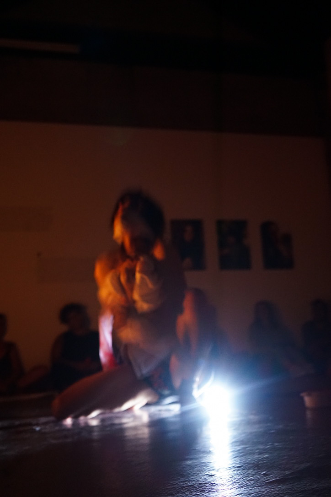
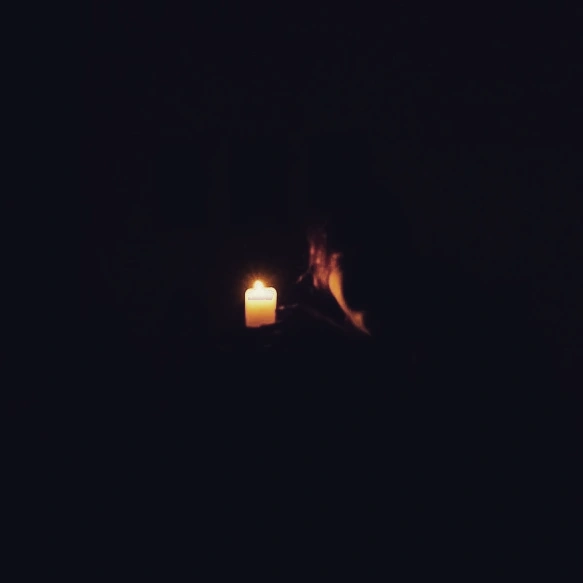

IF ONLY HANDS COULD SPEAK is a 73 minute durational work, created as a transgender reimagining of myth. Ovid’s Metamorphosis contains the story of Philomela, who is raped by a Thracian King, Tereus, who then cuts out her tongue to suppress her speech. Philomela proceeds to weave a tapestry depicting the act, thus exposing Tereus before she is transformed into a nightingale: a songbird capable of beautiful melody. In this way, Philomela overcomes her censorship through creative practice, and manages to break through the boundaries placed upon her by her oppressor. The artist delivers a multidisciplinary performance-as-ritual, evoking the severance of her own tongue and live painting using stage blood with the paintbrush of her naked transfeminine body, expressing what it has meant for her to overcome her own abuse and sexual trauma, severing all which can no longer serve her.

The work debuted at Edinburgh's Aye Festival in 2022, and went on to receive an international commission at Homografia Festival, Brussels, in 2023. The performance is accompanied by Petal's orchestral noise work "ARCHITECT OF MY ABUSE: this chapel you built must surely collapse", which she previously released under the lonely carp moniker.



